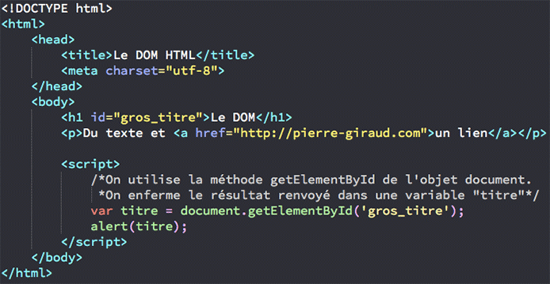
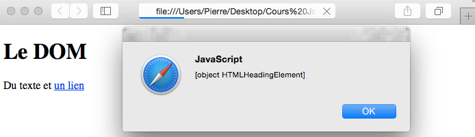
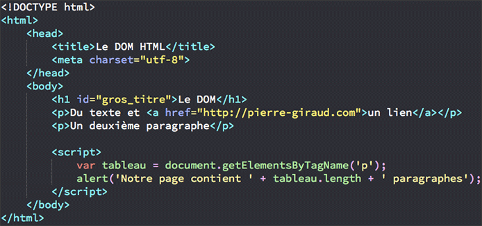
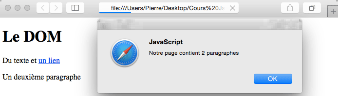
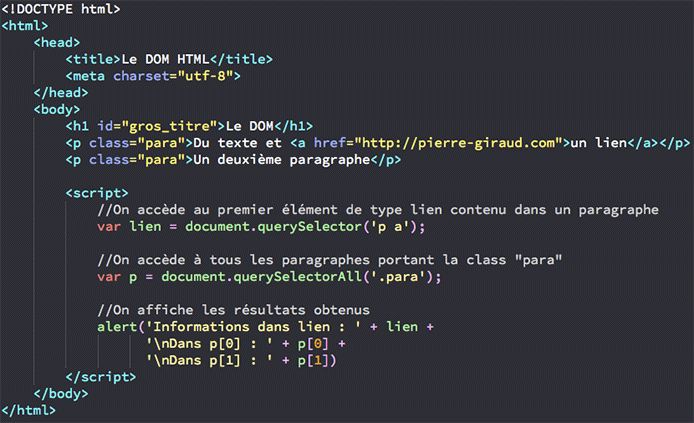
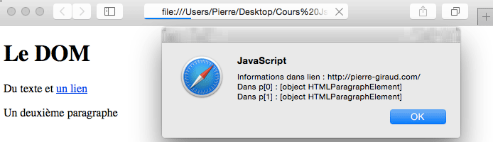
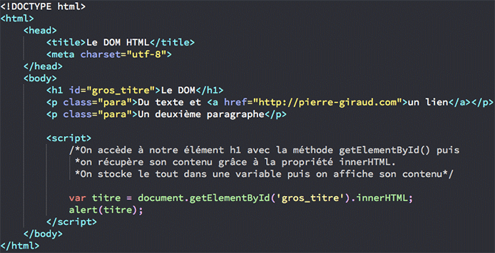
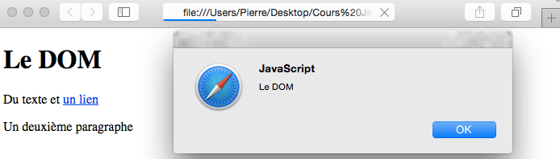
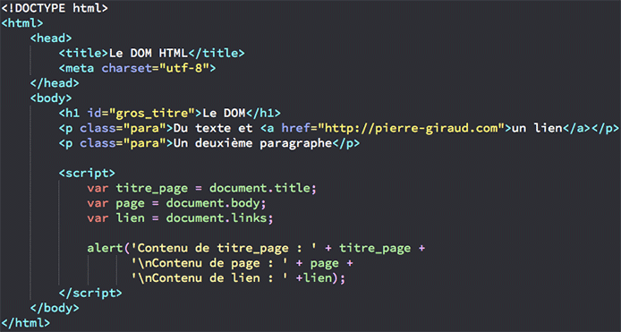
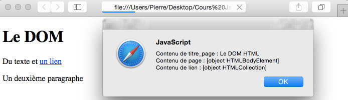

Apprendre javascript
ACCEDER A UN ELEMENT HTML EN JAVASCRIPT
L’une des grandes forces du JavaScript est de nous permettre de manipuler des éléments HTML en se servant du DOM et de ses méthodes et propriétés. Cependant, pour manipuler un élément, il faut d’abord pouvoir y accéder. Nous allons voir différents moyens d’accéder aux éléments HTML dans ce chapitre. Pour accéder aux éléments de notre page HTML, nous allons toujours devoir passer par l’objet Document et non pas l’objet Element comme on pourrait le penser à priori.
-
Nous allons voir différentes méthodes de l’objet Document qui constituent autant de façons différentes d’accéder à un ou plusieurs éléments HTML :
- La méthode getElementById() ;
- La méthode getElementsByTagName();
- La méthode getElementsByClassName();
- La méthode querySelector() ;
- La méthode querySelectorAll().
La première méthode, getElementById(), va nous permettre de cibler un élément HTML possédant un attribut id en particulier. C’est certainement la méthode la plus utilisée. Si l’élément est trouvé, getElementById() va renvoyer l’élément en tant qu’objet. Si aucun élément n’est trouvé, la méthode renverra la valeur null. Cette méthode va prendre comme unique argument la valeur de l’id de l’élément ciblé. Regardez plutôt l’exemple ci-dessous :


La méthode getElementsByTagName() va retourner des informations relatives à tous les éléments HTML d’un même « genre » (tous les éléments p par exemple) dans un tableau. Cette méthode va prendre le nom du type d’élément à récupérer en argument. L’intérêt de cette méthode est qu’on va ensuite pouvoir récupérer un élément en question en utilisant un indice du tableau créé.


Les méthodes querySelector() et querySelectorAll() vont nous permettre d’accéder à des éléments HTML correspondant à un certain sélecteur CSS, que ce soit un id, une class, un type d’élément, un attribut au autre. Ces deux méthodes vont donc prendre un sélecteur CSS en argument. On peut évidemment préciser une suite de sélecteurs pour cibler un élément précis. querySelector() va renvoyer des informations relatives au premier élément trouvé correspondant au sélecteur CSS sélectionné, tandis que querySelectorAll() va renvoyer des informations sur tous les éléments correspondants. Une nouvelle fois, un tableau va être créé lorsqu’on utilise querySelectorAll().


Jusqu’à présent, nous avons pu accéder à des éléments HTML et retourner des informations liées aux objets créés par le DOM à partir de ces éléments. Cela va déjà être très utile dans de nombreuses situations. Cependant, on va également pouvoir accéder au contenu des éléments HTML, c’est-à-dire à ce qui se situe entre les deux balises ouvrante et fermante d’un élément. La manière la plus simple de procéder est d’utiliser la propriété innerHTML sur le résultat renvoyé par nos méthodes. Celle-ci va retourner ce qu’il y a à l’intérieur (« inner » signifie « à l’intérieur » en anglais) d’un élément HTML. Voyons immédiatement quelques exemples utilisant cette propriété.


Le DOM nous offre également la possibilté, via certaines de ses propriétés, d’accéder directement à un type ou une collection d’éléments HTML en particulier. Par exemple, on va pouvoir accéder à l’élément body grâce à la propriété du même nom ou à un élément de type lien grâce à la propriété links. Nous allons voir ici les propriétés title, body et links qui appartiennent toutes à l’objet Document. Notez que la propriété links va retourner tous les éléments area et a possédant un attribut href dans un tableau.


nous avant definis qulque methode que tout devloppeur doit connaitre pour qui'il peut s'approfendir dans le domaire de devloppement des site web